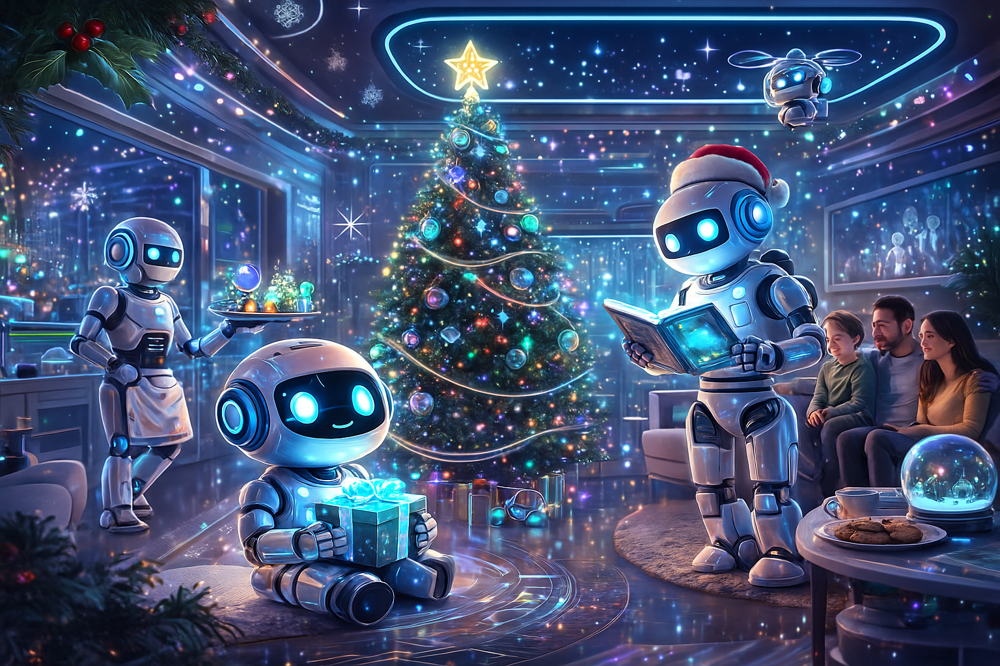

Welcome to a world where lights don’t just shine — they think. Where Christmas trees float thanks to magnetic fields, and robot choirs powered by artificial intelligence bring new life to classic carols. This project celebrates a futuristic vision of the holidays, reminding us that even as technology evolves, the true Christmas spirit remains.
This digital space is a fusion of creativity, imagination, design, and the desire to share something special with whoever scans this QR code. Here, Christmas becomes a futuristic spectacle filled with neon colors, holograms, glowing landscapes, and amplified emotions.
The image below represents this idea: a luminous cyber-city, robots celebrating, reactive lights, holographic decorations, and a spark of human warmth glowing inside a technological world.
 “May your Christmas be as bright as the neon lights of the future, as warm as memories from the past, and as unique as you. The future is celebrating with you.”